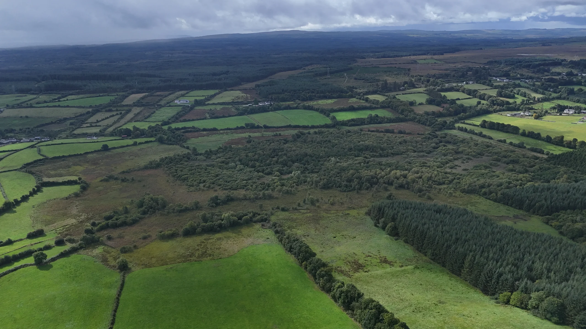
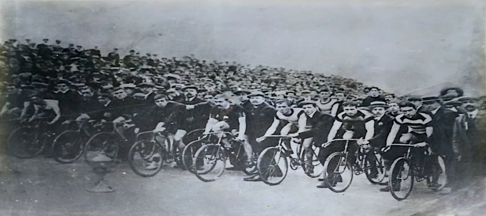
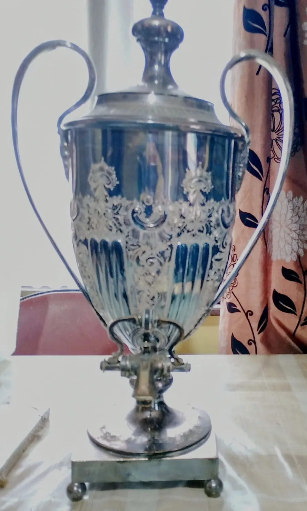

Ballinlough
Ballinlough in Irish “Baile an Locha” means townland of the lake. In the electoral division of Ballynagar it is 200.27 acres or 81.05 hectares in size.
In the 1841 census there were 152 people and 30 houses and in the 1851 census there were 78 people and 16 houses. The 1847-64 Griffith’s Valuation recorded 8 houses and 8 landholders and the 1840 maps indicates up to 39 houses or outbuildings. In the 1901 census there were 6 residences and 26 inhabitants and in the 1911 census there were 7 residences and 31 inhabitants. It was recorded in the 19th century as having a mill and a forge and there is a ringfort recorded in the west of the townland.
A central feature of this townland is the 51 acre Ballinlough lake of which 20 acres are in this townland, 15 acres in Loughpark townland, 9 in Slatefield and 7 in Rosseeshal. It had 4 Islands (possibly 6) of which 3 were Crannogs (man made Islands) from the ?copper age. A deep lake with good fishing, in 1890 a bog slide from the Sliabh Aughty uplands travelled down the course of the Moyglass river for over a week totally covering the lake in a peaty substance leaving it in a swamp like state ever since, covered in trees and vegetation with a stream running through it.

Ballinlough borders Commons West, Loughpark, Rosseeshal, Slatefield and Tulla.
Michael Duane
Michael Duane also known as ‘Michil’ was born in Ballinlough in 1883 one of 8 children, 5 sisters and 3 brothers. All but one brother Pat, emigrated. Michael and his brother Joseph emigrated to England in the early 20th century. Michael became a cyclist of note and won many races while there, including a road race in Grimsby in 1907.


He returned to Ireland some years later and lived in Knockmoyle townland. Married to Margaret nee Mullavin, she was from Co. Westmeath and a schoolteacher in Drim National School. Margaret died in 1964 and Michael died in 1973 and both are buried in Ballinakill cemetery. Joseph enlisted with the Royal Sussex Regiment of the British Army and was killed in action in France on the 9th of August 1915. He is buried in Cambrin Churchyard Cemetery in north eastern France. John Duane, nephew of Michael lived in Ballinlough and was also a keen cyclist and had a bicycle that belonged to his uncle for many years. Another nephew Brendan, a Garda stationed in Kevin Street Dublin was very involved in rowing and later coaching in the Garda rowing club in Islandbridge, Dublin. He was one of the main coaches to the Irish rowing team at the 1980 Olympics in Moscow which included a win in the Petite final for one of the teams. In the 2000s Brendan received a presentation from President Mary McAleese at a Sports Banquet in Dublin.
Many thanks to Michael Neville (Ballinlough) for information and Chrissie Duane (Knockmoyle) for pictures.
Map
Placenames
| Name | Type | Notes |
|---|---|---|
| Ballinlough Lake | lake or lakes | |
| Middle Island | island or archipelago | |
| Still Island | island or archipelago | |
| The Callow | field | This consists of the fields between the two rivers. |
| Móinín Mór | field | Pronounced “Mowneen More”. |
| The Congo | field | |
| The Riasc | field | |
| The Hill | hill or hills | |
| Doyle’s | field |
Houses
| Name | Notes |
|---|---|
| Kindles’ House | |
| Duane’s House | |
| Murray’s House | |
| Cooney’s House | Location not exact, somewhere in the middle of the Riasc. |
| Moran’s House | Then Coughlan’s. |
Buildings
| Name | Notes |
|---|---|
| Forge |